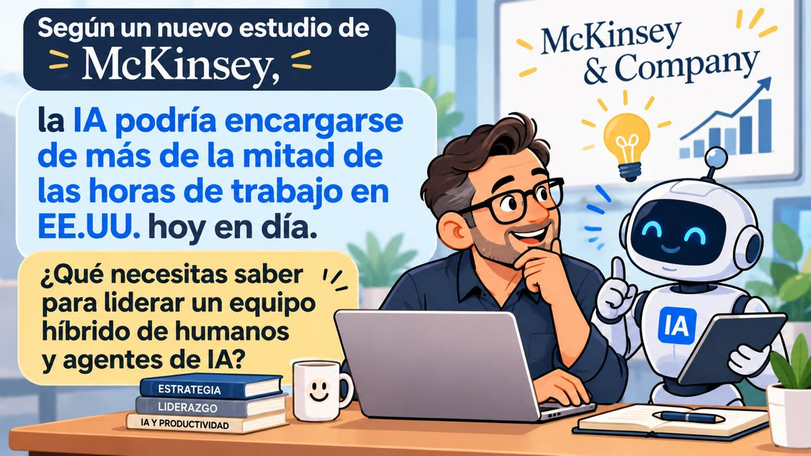

85%98%
Disponibilidad de la plataforma de ventas tras migrarla a contenedores con OpenShift y Dynatrace.Sales platform availability after moving it to containers with OpenShift and Dynatrace.
Telcel
Director de Big Data en Totalplay Director of Big Data at Totalplay
Big Data, inteligencia artificial y transformación tecnológica Big Data, artificial intelligence and technology transformation
Convierto datos y plataformas críticas en resultados de negocio. 27 años liderando tecnología en telecomunicaciones, hoy enfocado en llevar agentes de IA y datos como producto al centro de la operación. I turn data and mission-critical platforms into business results. 27 years leading technology in telecom, now focused on putting AI agents and data products at the core of operations.
01
Cada cifra viene de un proyecto real que dirigió. Así se ve la tecnología cuando se traduce en negocio. Every figure comes from a real project he led. This is what technology looks like when it turns into business.
85%98%
Disponibilidad de la plataforma de ventas tras migrarla a contenedores con OpenShift y Dynatrace.Sales platform availability after moving it to containers with OpenShift and Dynatrace.
Telcel
10 mil millones billion
CDRs procesados al día en la plataforma de mediación que migró de Ericsson a INTEC.CDRs processed per day on the mediation platform migrated from Ericsson to INTEC.
Telcel
−75%
Fallas en producción, y 20% menos tiempo de entrega, al reorganizar las pruebas con TMO y JIRA.Production failures, plus 20% faster delivery, after restructuring testing with TMO and JIRA.
Telcel
17 países countries
Con TELARIX homologado en el continente americano y soporte centralizado.Running a standardized TELARIX platform across the Americas with centralized support.
Telcel
−30%
Incidentes reportados por clientes tras adoptar DevOps en seis meses.Customer-reported incidents after adopting DevOps in six months.
Telcel
MXN 2 mil millones billion
Facturados cada mes a operadores con el sistema nacional "El que llama paga".Billed to carriers every month through the national Calling Party Pays system.
Telcel
02
El trabajo ya se está redistribuyendo entre personas y agentes de IA. La ventaja la tendrán las empresas que sepan liderar ese equipo híbrido con datos confiables, gobierno claro y una estrategia conectada al negocio. Work is already being redistributed between people and AI agents. The advantage will go to companies that can lead that hybrid team with reliable data, clear governance and a strategy tied to the business.

McKinsey Global Institute (noviembre 2025) estima que la tecnología disponible hoy podría automatizar alrededor de 57% de las horas de trabajo en EE.UU. Eso no elimina la mitad de los empleos: cambia cómo se organiza el trabajo. McKinsey Global Institute (November 2025) estimates that technology available today could automate about 57% of U.S. work hours. That does not eliminate half of all jobs: it changes how work is organized.
Portales de autoservicio con agentes de IA integrados, como Post Buy Addressable en Totalplay, diseñados desde el discovery hasta el roadmap.Self-service portals with integrated AI agents, such as Post Buy Addressable at Totalplay, designed from discovery to roadmap.
Una fuente única de datos sobre AWS y Google Cloud que las áreas comerciales y operativas pueden usar y monetizar.A single source of data on AWS and Google Cloud that commercial and operations teams can use and monetize.
Gobierno de datos, DevOps, observabilidad y ciberseguridad para que la IA trabaje sobre sistemas que no fallan.Data governance, DevOps, observability and cybersecurity so AI runs on systems that don't fail.
03
Para pymes: estima cuántas horas podría liberar un asistente de IA en tu equipo de atención a clientes y cuánto vale ese tiempo. Mueve los controles y mira el resultado al instante. For SMEs: estimate how many hours an AI assistant could free up in your customer service team, and what that time is worth. Move the controls and see the result instantly.
Capacidad que podrías liberarCapacity you could free up
0 horas al meshours per month
Equivale aEquivalent to 0 personas de tiempo completofull-time people
Estimación ilustrativa, no una promesa de resultados: el impacto real depende de tus procesos, tus datos y de cómo se implemente la IA. Supuestos: mes de 4.33 semanas y jornada de 40 horas para calcular el costo por hora. El escenario conservador usa el aumento promedio de 14% en productividad de agentes de soporte con un asistente de IA generativa (Brynjolfsson, Li y Raymond, NBER). Los escenarios moderado y avanzado usan el rango de 30% a 45% que McKinsey (2023) estima para atención a clientes. Illustrative estimate, not a promise of results: real impact depends on your processes, your data and how AI is implemented. Assumptions: 4.33-week month and 40-hour work week to compute hourly cost. The conservative scenario uses the average 14% productivity gain for support agents using a generative AI assistant (Brynjolfsson, Li and Raymond, NBER). The moderate and advanced scenarios use the 30% to 45% range McKinsey (2023) estimates for customer care.
04
De construir el Data Warehouse de indicadores regionales de Telcel a dirigir la organización de Big Data de Totalplay. Cada tramo mide el tiempo real en el cargo. From building Telcel's regional KPI data warehouse to leading Totalplay's Big Data organization. Each segment is sized by time in the role.
Totalplay, febrero 2026 a la fechaFebruary 2026 to present
Telcel, 2018–2025
Telcel, 2011–2018
Telcel, 2000–2010
Telcel, 1997–1999
05
Totalplay, 2026
Portal de autoservicio construido sobre una fuente única de datos, con agentes de inteligencia artificial integrados. Lideró el discovery, la definición del proyecto y su roadmap funcional y tecnológico. A self-service portal built on a single source of data with integrated AI agents. He led the discovery, the project definition and its functional and technology roadmap.
Go Live programado para diciembre de 2026. Go-live scheduled for December 2026.
Telcel, 2018–2025
Implementación de Red Hat OpenShift con monitoreo Dynatrace para la plataforma de ventas y renovaciones. Rolled out Red Hat OpenShift with Dynatrace monitoring for the sales and renewals platform.
Disponibilidad de 85% a 98% y continuidad en la operación de distribuidores. Availability from 85% to 98% and uninterrupted distributor operations.
Telcel, 2011–2018
Dirección de la migración de la plataforma que procesa los registros de llamadas para facturación entre operadores. Led the migration of the platform that processes call records for inter-carrier billing.
10 mil millones de CDRs diarios, menos pérdida de información y menos reclamaciones por cobros erróneos. 10 billion CDRs per day, less data loss and fewer complaints about billing errors.
Telcel, 2018–2025
Adopción de DevOps en seis meses, oficina de gestión de pruebas con JIRA, validación de código con Checkmarx y autenticación de dos factores. DevOps adoption in six months, a test management office on JIRA, code validation with Checkmarx and two-factor authentication.
30% menos incidentes de clientes, 75% menos fallas en producción y robo de identidad reducido a 1–2 casos en 10 mil usuarios. 30% fewer customer incidents, 75% fewer production failures and identity theft cut to 1–2 cases among 10,000 users.
06
Licenciatura en Ciencias de la InformáticaB.Sc. in Computer Science (Ciencias de la Informática)
UPIICSA, 1991–1995
Certificación en Liderazgo y Relaciones HumanasCertification in Leadership and Human Relations
Creando Conciencia, con reconocimiento SEP, 2024Creando Conciencia, SEP-recognized, 2024
Español nativoSpanish, native
Inglés C1, competencia profesionalEnglish C1, professional proficiency
Mauricio está abierto a posiciones de liderazgo y a proyectos de consultoría en estrategia de datos, agentes de IA y transformación tecnológica. Mauricio is open to leadership roles and consulting projects in data strategy, AI agents and technology transformation.